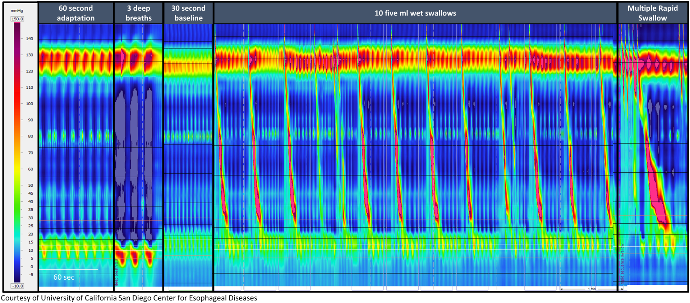

高解析度食道壓力測定 (High-Resolution Manometry, HRM) 是目前評估食道運動功能 (esophageal motility) 的金標準檢查。相較於傳統式食道壓力測定 (conventional manometry) 僅使用 4-8 個壓力感測器，HRM 使用 36 個緊密排列的壓力感測器，間距約 1 公分，能完整且連續地記錄從咽喉 (pharynx) 到胃 (stomach) 的壓力變化，並以彩色等壓圖 (Clouse plot) 方式呈現，大幅提升診斷的準確性與效率。
目前臨床上主要使用三套商用 HRM 系統，各有其技術特色：
| 系統名稱 | 製造商 | 感測器技術 | 分析軟體 | 特色 |
|---|---|---|---|---|
| ManoScan | Medtronic | 固態感測器 (solid-state) | ManoView | 最廣泛使用，Chicago Classification 開發基礎 |
| Solar GI / MMS | Laborie (原 MMS) | 水灌注式 (water-perfused) 或固態 | 專屬分析平台 | 歐洲使用較多 |
| InSIGHT Ultima | Diversatek | 固態感測器 | 專屬分析平台 | 高解析度阻抗整合 |
臨床要點：Chicago Classification v4.0 已針對三套商用系統分別建立正常值，但不同系統間的數值不可直接互換比較。
Clouse plot 是 HRM 特有的視覺化方式，以色彩編碼呈現壓力數據：

圖：正常食道蠕動的 HRM Clouse Plot。仰臥位（左）及直立位（右）的標準檢查姿勢。圖片來源：Yadlapati R, et al. Neurogastroenterology & Motility. 2021;33(1):e14058. CC-BY. 原文：PMC8034247| 步驟 | 內容 | 目的 |
|---|---|---|
| 基線記錄 (baseline) | 靜止 30 秒，不吞嚥 | 記錄靜止壓力 (resting pressure)，包含 LES 基礎壓力 |
| 仰臥位吞嚥 (supine swallows) | 5 mL 水 x 10 次，間隔 20-30 秒 | 標準評估食道蠕動和 EGJ 鬆弛 |
| 直立位吞嚥 (upright swallows) | 5 mL 水 x 5 次 | CCv4.0 新增要求，部分異常僅在直立位出現 |
| 激發測試 (provocative maneuvers) | 多次快速吞嚥 (MRS) 和/或快速飲水挑戰 (RDC) | 評估蠕動儲備功能 (peristaltic reserve) |
多次快速吞嚥 (Multiple Rapid Swallows, MRS) - 連續快速吞入 5 次 2 mL 水（間隔 < 4 秒） - 正常反應：快速吞嚥期間蠕動被抑制 (deglutitive inhibition)，最後一次吞嚥後出現強力蠕動波 - 最後一次蠕動波的 DCI 應 > 基線平均 DCI - 評估蠕動儲備功能：MRS 後 DCI 增強代表有儲備功能
快速飲水挑戰 (Rapid Drink Challenge, RDC) - 以吸管快速喝下 200 mL 水 - 評估 EGJ 在大量液體通過時的鬆弛能力 - 對 EGJ 出口阻塞 (EGJOO) 的評估特別有幫助
| 指標 | 英文全稱 | 定義 | 臨床意義 |
|---|---|---|---|
| IRP | Integrated Relaxation Pressure | 吞嚥後 10 秒視窗內，最低 4 秒壓力的平均值 | 評估 EGJ 鬆弛功能，診斷 achalasia 的關鍵指標 |
| EGJ-CI | EGJ Contractile Integral | EGJ 高壓帶的收縮強度積分 | 評估 EGJ 屏障功能，與 GERD 相關 |
| EGJ 型態 | EGJ Morphology | LES 與橫膈腳 (crural diaphragm) 的相對位置 | Type I (重疊)、Type II (分離 1-2 cm)、Type III (分離 > 2 cm，即裂孔疝氣) |
| 指標 | 英文全稱 | 定義 | 臨床意義 |
|---|---|---|---|
| DCI | Distal Contractile Integral | 遠端食道蠕動波的收縮強度積分 (mmHg-s-cm) | 評估蠕動力量；> 8000 = 過強；< 100 = 缺失 |
| DL | Distal Latency | 從 UES 鬆弛起點到遠端收縮減速點 (CDP) 的時間 | 評估蠕動協調性；< 4.5 秒 = 早發收縮 (premature contraction) |
| Break size | Peristaltic Break | 蠕動波中壓力 < 20 mmHg 的缺口長度 | > 5 cm = 大缺口 (large break)；2-5 cm = 小缺口 |
注意：正常值因 HRM 系統而異，以下為概略參考範圍。
| 指標 | 仰臥位正常值 | 直立位正常值 |
|---|---|---|
| IRP (中位數) | < 15 mmHg（ManoScan） | < 12 mmHg（ManoScan） |
| DCI | 450-8000 mmHg-s-cm | 依系統而異 |
| DL | > 4.5 秒 | > 4.5 秒 |
| Peristaltic break | < 5 cm | – |
結果依 Chicago Classification v4.0 進行階層式判讀：
flowchart TD
A[HRM 原始資料] --> B{IRP 是否升高？}
B -->|是| C{蠕動型態？}
C -->|無蠕動| D[Type I Achalasia]
C -->|全食道加壓| E[Type II Achalasia]
C -->|早發痙攣| F[Type III Achalasia]
C -->|有蠕動存在| G[EGJOO<br>食道胃交界處出口阻塞]
B -->|否| H{DCI 和 DL？}
H -->|DCI >8000| I[Jackhammer<br>過強蠕動]
H -->|DL <4.5s 且 DCI >450| J[DES<br>遠端食道痙攣]
H -->|100% 缺失蠕動| K[Absent contractility<br>蠕動缺失]
H -->|>70% 無效蠕動| L[IEM<br>無效食道蠕動]
H -->|>50% 碎裂蠕動| M[Fragmented peristalsis<br>碎裂蠕動]
H -->|以上皆非| N[正常食道蠕動]| 情境 | 建議搭配檢查 |
|---|---|
| IRP 邊界值 (borderline) | FLIP（評估 EGJ 擴張性） |
| 懷疑 EGJOO 但不確定 | 食道鋇劑攝影 (timed barium esophagram) + FLIP |
| 術前完整評估 | HRM + 24h pH-impedance |
| 蠕動異常合併逆流症狀 | HRM + pH-impedance monitoring |
2025 年發表的系統性回顧分析了 17 項研究（2013-2025 年，涵蓋 4,588 名患者，來自 6 個國家），評估人工智慧 (AI) 在 HRM 判讀中的應用：
| 應用領域 | AI 表現 |
|---|---|
| 解剖標誌辨識 (UES/LES 定位) | 高準確度 |
| 檢查品質評估 | 高準確度 |
| 弛緩不能症 vs 非弛緩不能症分類 | 高準確度 |
| 弛緩不能症亞型分類 (Type I/II/III) | 良好準確度 |
| Chicago Classification 全分類自動化 | 進步中，尚待驗證 |
AI 輔助 HRM 判讀是食道功能檢查領域最具前景的技術發展之一，但目前仍處於研究驗證階段，尚未普遍應用於臨床。
台灣目前多家醫學中心具備 HRM 檢查能力：
↑📋 請填入貴院資料：
- 本院負責科別：_______________
- 聯絡電話 / 分機：_______________
- 門診時間：_______________
- 主治醫師：_______________
- 本院檢查設備與特色：_______________